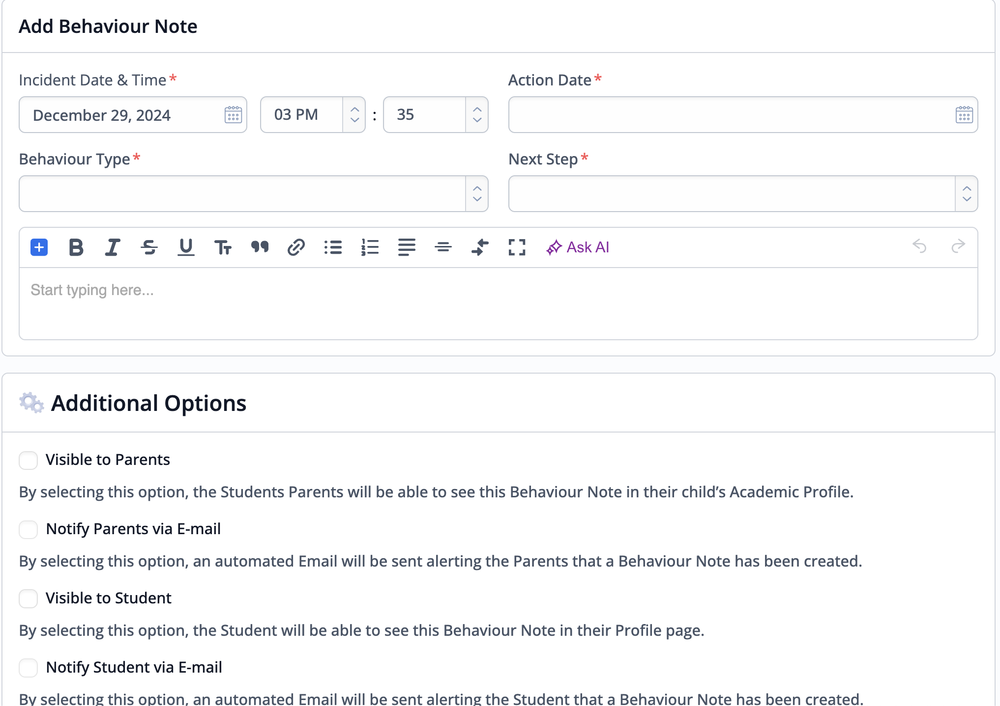
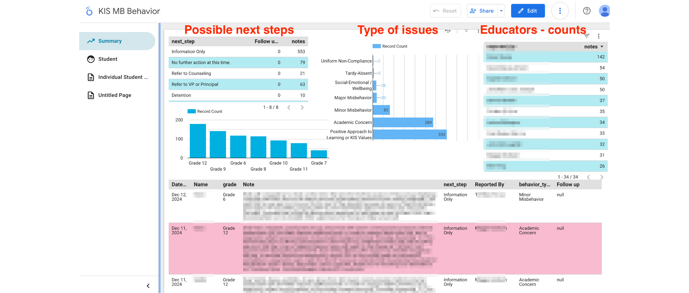
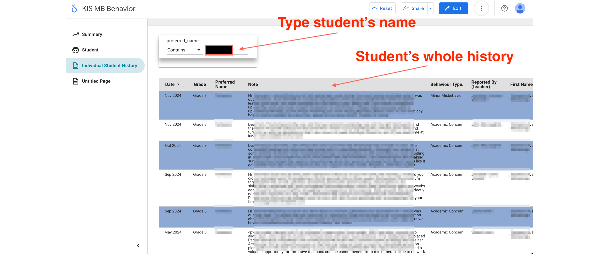

Workflow for Pastoral Care with ManageBac
Turning ManageBac data into actionable insights!
Each school I have been to over the last 20 years have a slightly different approaches when dealing with students behaviours, discipline, academic issues or social-emotional issues. This is a large umbrella of concerns that I am categorizing into the “pastoral care” label.
The workflow will mostly depends on How and Where the relevant data are recorded. In my earlier schools, it was papers and color slips shared to the counselor that will then put it into the famous student file. I have been in schools were it was stored into the Powerschool sytem and now I am in a school where all pastoral care concerns are logged into ManageBac into their behavior section.
The feature is mostly practical. Educators can log the note and, as appropriate, send directly an email to the students’ guardians from there. There are also options for what are the type of issues we are dealing with and what are the next steps.
Here is what it looks like: 
2 mains issues arise from these records:
- It’s really hard to do any trends analysis (students, cohorts, educators, curriculum, etc.)
- There is actually no way of tracking follow up.
Partial solution
To solve the first issue, here is what we have done:
Use MB API.
Use the ManageBac API to download all the behaviors notes every 12 hrs and store it into a Google Sheet.
Here is a sample AppScript code that we wrote for that purpose. You need to API token to do this (you can find it in the admin part of MB or ask IT admin)
function getBehaviorNotes() {
const ss = SpreadsheetApp.getActiveSpreadsheet();
const behaviorSheet = ss.getSheetByName('behavior'); // data are stored in the behavior tab
const token = 'FIND YOUR OWN on the MB SITE';
// Add column headers to 'behavior' sheet
const headers = [
"Note ID",
"Student ID",
"First Name",
"Last Name",
"Email",
"Grade",
"Incident Time",
"Behavior Type",
"Notes",
"Next Step",
"Next Step Date",
"Author ID",
"Reported By",
"Homeroom Advisor",
"Visible to Parents",
"Visible to Students",
"Created At",
"Updated At"
];
behaviorSheet.getRange(1, 1, 1, headers.length).setValues([headers]);
const url = 'https://api.managebac.com/v2/behavior/notes';
const requestHeaders = {
'auth-token': token
};
let page = 1;
let hasMore = true;
while (hasMore) {
const params = {
page: page,
per_page: 100
};
const urlWithParams = `${url}?page=${params.page}&per_page=${params.per_page}`;
const options = {
headers: requestHeaders,
method: 'GET',
muteHttpExceptions: true
};
const response = UrlFetchApp.fetch(urlWithParams, options);
const data = JSON.parse(response.getContentText());
// Check if there are more pages
hasMore = data.meta.current_page < data.meta.total_pages;
data.behavior_notes.forEach(note => {
let notes = note.notes;
if (notes) {
try {
// a few notes have a bunch of html tags on them. Removing all of them here.
notes = notes.replace(/<[^>]+>/g, '');
} catch (e) {
console.error(`Error processing notes: ${e.message}`);
notes = "";
}
}
const noteData = [
note.id,
note.student_id,
note.first_name,
note.last_name,
note.email,
note.grade,
note.incident_time,
note.behavior_type,
notes,
note.next_step,
note.next_step_date,
note.author_id,
note.reported_by,
note.homeroom_advisor,
note.visible_to_parents,
note.visible_to_students,
note.created_at,
note.updated_at
];
behaviorSheet.appendRow(noteData);
});
page++;
}
}Once you tested your code, you just add a trigger to it. We choose every 12hrs (mid-day and midnight) to not abuse too much the MB API or Google bandwidth limits.
Create a Google Looker Studio dashboards
Next step is we create a looker studio dashboard to analyse our behavior notes. The idea was to make it first usable for admin and counselors then we added our grade level lead (GLL) on it.
What is Looker Studio excel at is the automatic filtration that happens once you select any of the possible filters (grade level, type of behavior, next steps, students, educators, etc.)
Here is a few dashboard screenshots.
Below is a screenshot of one of our summary dashboard.

New notes are on top, so they can be read first. Grade Level Lead can just quickly filter to their relevant grade.
And we are very glad that have also a culture where we celebrate quite a bit the accomplishments of our students (biggest category this year!).
You can also look for an individual student to have the history beyond just one academic year.

What’s next?
I mentioned earlier that this was a partial solution, as we are still struggling to find an easy way to indicate when follow-up is complete. At the moment, this is done manually, with an admin team member sending an email to the educator who logged the note and requested follow-up on the next step.
I am happy to hear feedback and connect with peers who are also working on similar workflows.